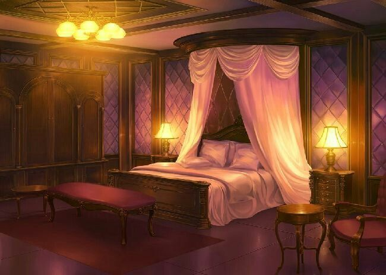

Você acaba de ler um livro que você ama, porém, no final o seu personagem preferido tem um fim trágico, e você fica indignado(a) com esse final e acaba adormecendo em sua cama pensando no que você faria para mudar esse final. Quando voce acorda descobre que virou a vilã desta história, o que você vai fazer?
Então você começa a pensar do porque você está neste mundo e só se lembra de que depois de terminar de ler o livro você deitou e dormiu, então porque você está aqui? Você descide...
Então você começa a pensar no que fazer para mudar o final do seu personagem fav e tentar sobreviver ja que você é a vilã da história.
A primeira coisa é mudar a sua atitude de vilã e agir como uma heroína. Mais depois de um tempo sendo legal voce resolve voltar e dormir.
Você acorda novamente no quarto da vilã.
Após um tempo pensando você chega a conclusão que o seu fav tem que ficar longe da protagonista, porque ele foi morto pelo protagonista ciumento.

Você desconfia que pode ter sido amaldiçoada então você vai para a biblioteca procurar sobre possiveis maldiçôes e feitiços.
Você fala para seu fav que tem um novo lugar de exploração muito interessante e ele acaba se interessando ja que ele é um explorador. Porém o lugar que você mencionou fica muito longe do local atual. Você volta para casa, contudo você acaba precensiando o seu fav se confissando para a protagonista e pedindo a ela para que o acompanhasse.
Ao voltar da biblioteca você avista o seu personagem fav na rua.
Ao correr em direção ao seu fav e entrando na frente dele você é apunhalada com a lamina afiada da espada do protagonista nojento que voce tanto odeia. Você grita para que seu fav fugir de lá. Com a visão do seu fav indo para longe...
Ao se aproximar do protagonista que estava quase atingindo o seu fav ele para o movimento que estava fazendo e coloca sua atenção para você, porém você é mais agiu que ele e o acerta em seu peito, com ódio desse personagem você está realizando um sonho
Você abre os olhos ofegante e com medo, e descobre que estava deitada em seu quarto e que tudo não se passava de um sonho que tivera com seu livro favorito e o tragico final de seu fav.
Antes que você possa perceber você sente uma pressão no peito e olha para baixo com medo e há uma ponta de espada ensanguentada em seu peito. O protagonista que você tanto odeia acaba de te atingir, com muita dificuldade você fala para o seu fav fugir e com a visão dele indo para longe...